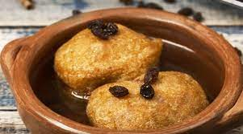
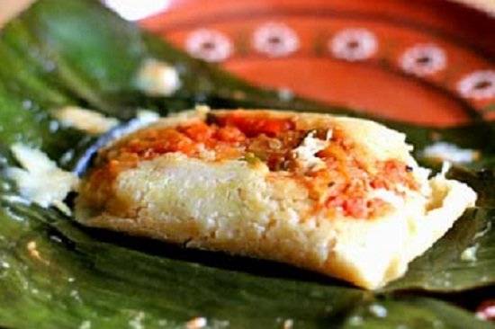
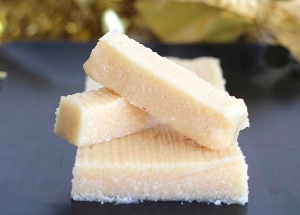
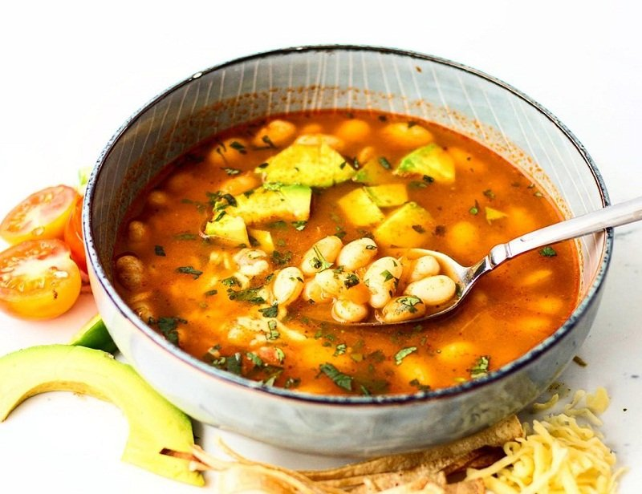

¡Prueba nuestros Manjares Tipicos!

Molletes
Los molletes guatemaltecos son un postre típico y popular durante la Navidad y la Cuaresma. Los molletes son comunes en muchos países latinoamericanos y cada país las hace un poco diferentes. También hay muchas versiones diferentes de la receta guatemalteca de mollete . Esta versión es un poco más fácil y los ingredientes son fáciles de encontrar.
Tamales de Arroz
Los tamales de arroz guatemaltecos son muy diferentes a los tamales de otras regiones. Estos están envueltos en hojas de plátano, lo que le da un aroma floral, y son dos o tres veces más grandes que los tamales hechos con hojas de maíz. También se les conoce como paches de arroz y son una tradición en cada hogar del país regularmente se comen cada sábado por la tarde. Pero son especialmente preparados en épocas navideñas y fiestas de fin de año, también suelen ser utilizados en bodas y demás festividades chapinas son muy sabrosos y nutritivos, disfruta de esta receta de tamal guatemalteco.
Conserva de Coco
La conserva de coco guatemalteca es un dulce típico de Guatemala comúnmente vendidas en las ferias departamentales, su preparación es fácil y rápida disfruta de esta sabrosa receta de conserva de coco guatemalteca.
Frijoles Blancos guatemaltecos
Los frijoles blancos guatemaltecos son otro clásico de la gastronomía de Guatemala. Suelen prepararse con espinazo, costilla, carne cerdo, chicharrones, tocino y longanizas, entre otras carnes. Los frijoles blancos se pueden encontrar en una presentación roja o blanca, dependiendo de si se añade un tomate al plato. La siguiente receta es de frijoles blancos con costilla, disfruta de esta deliciosa comida típica guatemalteca.
